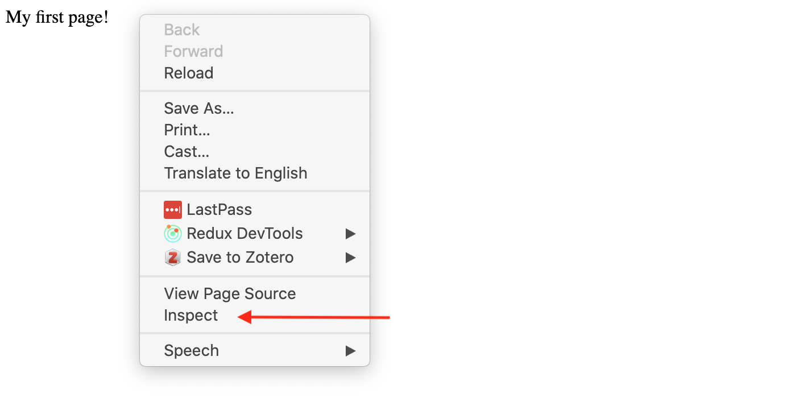

Last week we learned about Markdown. This week we’re going to take a step further and introduce you to HTML, which is the language of the web.
Introducing Markup Languages
What is a Markup Language?
From Wikipedia:
“a markup language is a system for annotating a document in a way that is syntactically distinguishable from the text, meaning when the document is processed for display, the markup language is not shown, and is only used to format the text.”
TEI: Text Encoding Initiative
Another example of a Markup language that has a long history in Computing in the Humanities is TEI, which stands for Text Encoding Initiative—a markup language used to encode texts in a way that makes them machine-readable. You can read more about TEI in “What Is TEI?” Text Encoding Initiative, 2022. https://tei-c.org/what-is-tei/.
Markup Language
TEI Example: The Proceedings of the Old Bailey
The Proceedings of the Old Bailey
What is HTML?
HyperText Markup Language
Click for Definition
HTML is not a programming language—it’s a markup language used to:
Tell your browser how to structure web pages
Create documents that are rendered in your browser
Make content appear or act a certain way
Creating an HTML File
Let’s try an example! To create an HTML file, just use the .html extension:
touch first_page.html
Then add some content in my IDE, like we did with our Markdown files.
My first page!
Then save it and open it in your browser!
Adding HTML Tags
Now try altering your file to include HTML tags:
<p>My first page!</p>
Save it and open the file in the browser again. What do you see?
Notice anything different?
Probably not!
Inspecting the Webpage
To see the HTML tags, use Developer Tools:
Right-click on your webpage
Select “Inspect” or “Inspect Element”

Inspect Page
The Source Code
What you see in the inspector is called the source code—the actual HTML that creates the page:
Your <p> tags are there!
The browser was interpreting them the whole time
They just don’t display on the page itself
Anatomy of an HTML Tag
<p>My first page!</p>
Opening tag: <p>
Content: “My first page!”
Closing tag: </p>
Element: all three together
Common HTML Tags
How would we make it into an HTML heading? Let’s take a look at some of the more common HTML tags that we can use to create HTML elements https://www.w3schools.com/tags/ref_byfunc.asp
Common HTML Tags
Tag
Purpose
<h1> to <h6>
Headings (h1 is largest)
<p>
Paragraph
<div>
Container/division
<a>
Link (anchor)
<ul>
Unordered list
<li>
List item
HTML Attributes
Great now what if we wanted to add a link so that you could click on that heading and go to another page (say the iSchool home page https://ischool.illinois.edu/)?
Well then we need to add an attribute.
HTML Attributes
HTML elements can have attributes—extra information about the element.
This diagram is also from the Mozilla docs and you can read more about how HTML elements can also have attributes here.
HTML Attributes
Let’s try using the anchor tag and href attribute to create an HTML element that links to https://ischool.illinois.edu/
Here’s another example that we should add to our html page, using the HTML <div> tag:
<div class="header" style="background: blue;">About Me</div>
In our example, the href attribute tells a link where to navigate to when clicked. The class attribute is another common one that helps you identify elements for styling with CSS.
Nesting Tags
Tags can contain other tags in a hierarchical structure:
<ul><li>Likes Coding and History</li><li>Likes "What We Do in the Shadows" TV show</li><li>Dislikes Mint Chocolate</li></ul>
<ul> is the parent
<li> elements are children
All <li> elements are siblings
HTML’s Limitations
HTML is a very powerful language and there are many more tags that we can use to create HTML elements. You can find a list of all the HTML tags here https://www.w3schools.com/tags/ref_byfunc.asp.
HTML documents are intended to add markup to text to add information that allows browsers to display the text in different ways—e.g., HTML markup might tell the browser to make the font of the text a particular size, or to position it in a particular place on the screen.
HTML’s shortcomings by Alison Parrish
Because the primary purpose of HTML is to change the appearance of text, HTML markup usually does not tell us anything useful about what the text means, or what kind of data it contains. When you look at a web page in the browser, it might appear to contain a list of newspaper articles, or a table with birth rates, or a series of names with associated biographies, or whatever. But that’s information that we get, as humans, from reading the page. There’s (usually) no easy way to extract this information with a computer program.
HTML is Forgiving (But Messy)
HTML is also notoriously messy—web browsers are very forgiving of syntax errors and other irregularities in HTML (like mismatched or unclosed tags). For this reason, we need special libraries to parse HTML into data structures that our Python programs can use, libraries that can make a “good guess” about what the structure of an HTML document is, even when that structure is written incorrectly or inconsistently.
Learn More About HTML
Understanding these limitations is important as we start to work with HTML and other web technologies. For more detailed information, I recommend reading through this introduction from Mozilla on HTML.
The main other tag that we should pay attention to is the script element is the other way that interactivity happens on most websites. If we search for the <script> tags, we can see it is located between lines 80 and 109 that it contains the following code: